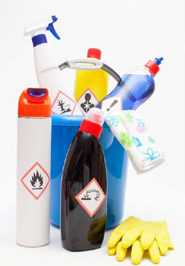

Bei vielen Arbeiten in der Gebäudereinigung werden die Reinigungsmittel in verdünnter Form eingesetzt. Die Anwendungslösungen bestehen also überwiegend aus Wasser und sind – im Vergleich mit den unverdünnten Reinigungsmitteln – weniger gesundheitsgefährlich.

Die im Rahmen des Produkt-Codes für Reinigungs- und Pflegemittel erstellten Betriebs- anweisungsentwürfe beziehen sich überwiegend auf Tätigkeiten mit den Konzentraten. Mit den nun vorliegenden Sammelbetriebsanweisungen
liegen auch für viele Tätigkeiten mit verdünnten Anwendungslösungen Betriebsanweisungsentwürfe vor. Mit diesen fünf Betriebsanweisungen lässt sich ein großer Teil der alltäglichen Arbeiten in der Gebäudereinigung erfassen.
Selbstverständlich gibt es Grenzen bei der Anwendung dieser recht weit gefassten Bereiche. Einzelheiten hierzu finden sich im Kopf der Betriebsanweisung und in der "Unterweisungshilfe". So ist in manchen Fällen die maximale Anwendungskonzentration begrenzt (z. B. 5 % für Desinfektionsreiniger), bestimmte Produktgruppen sind ausgeschlossen (z. B. GS90 bei Sanitärreinigungsmitteln oder GD70-90 bei Desinfektionsreinigungsmitteln) und manche Bereiche wie die Fassadenreiniger, Rohrreiniger, Emulsionen/Dispersionen oder Holz- und Steinpflegemittel sind nicht berücksichtigt.
Um sicher zu stellen, dass die Sammelbetriebsanweisungen auch tatsächlich für die vor Ort eingesetzten Reinigungsmittel eingesetzt werden können, muss kontrolliert werden, ob die Produkte zu den aufgeführten Produktgruppen "passen". Das ist stets dann der Fall, wenn das Produkt einen entsprechenden Produkt-Code trägt und in WINGIS oder WINGIS-Online enthalten ist.
Bei Produkten, die nicht zu einem der aufgelisteten Produkt-Codes gehören, beispielsweise mit einem Produkt-Code "Null" (z. B. GD0, GG0, GS0, GU0, ...), bei Druckgaspackungen oder enzymhaltigen Reinigungsmitteln usw., kann das System nicht angewendet werden. Gleiches gilt für abweichende Arbeitsverfahren wie Spritzverfahren, Sprühlanzen, Hochdruck-Reinigung.
Letztlich kann dieses System nicht dem Arbeitgeber die Verantwortung für die Gefährdungsbeurteilung und die Unterweisung der Beschäftigten abnehmen.